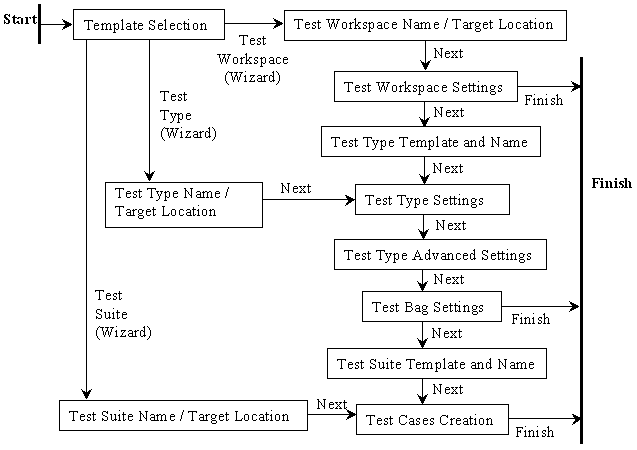

Templates/Test Tools.
test".
This directory with its content is called Test Workspace.Test Workspace Template with associated Test Workspace Wizard helps you to create this directory and main build.xml script.
Test Workspace position in CVS selection determines depth of created test workspace in CVS repository structure.
Value is set automatically if parent directory already contains CVS information.
Advanced Settings checkbox should be used with detailed knowledge of underlying properties only.
Default Test Type is lately changed in Test Type wizard when newly created test type is marked as default.
Default Attributes reflects new test bag attributes by default.
NetBeans Home Directory field contains relative path to NetBeans build directory in dependency on position in CVS or absolute path to NetBeans installation when out of CVS structure.
XTest Home Directory field contains relative path to XTest distribution directory in dependency on position in CVS or absolute path to XTest distribution provided by this module when test workspace is out of CVS structure.
Name defines new test type name (folder name, config name, build script name ...).
Default name value is derived from template (QA Functional... -> qa-functional, Unit... -> unit).
QA Functional Test Type Template and Unit Test Type Template are two templates of most common Test Types.
Set Test Type as default in Test Workspace checkbox propagates this new test type as default for current workspace when enabled.
Use Jemmy and Jelly libraries checkbox affects class path for tests under current test type.
Window System radio buttons define default window system mode for tests running in IDE mode.
Command Line Suffix property allows to add any string suffix to command line of IDE execution.
Compilation Exclude Pattern is expression defining folders/files to exclude from compilation.
Compilation Class Path property allows to add some archives or directories to compilation class path.
Use customizer, relative paths or paths relative to some vell-known path property.
Execution Extra JARs property defines set of jars used in class path during code execution or mounted into repository in IDE execution mode.
Jemmy JAR Home property contains path to Jemmy library.
Jelly JAR Home property contains path to Jelly library.
Be aware of using absolute paths and assure that relative paths are present in CVS and checked out from CVS during tests. Otherwise these tests could not be used in automated testing on servers.
Test Bag Name property defines name of test bag displayed in test results.
Attributes property contains expression composed from attributes and logical operators.
This expression is evaluated with attributes given during test execution and test bag is executed only after positive result.
Execution Include Pattern is expression defining set of classes/methods included in execution of current test bag.
Execution Exclude Pattern is expression defining set of classes/methods excluded from execution of current test bag.
Executor could be command-line - Code or using NetBeans - IDE.
Name defines class name of new test suite.
Package text field affects package location of the new class.
New directories are automatically created if necessary.
Simple Test Suite Template, Jemmy Test Suite Template and Jelly Test Suite Template are three offered templates.
Test Case Name defines test method name.
Template of test method can be selected here.
Usual template set contains templates with and without golden files usage.
Add button add above filled values into list of test methods.
Remove button removes selected test method from list.
Up button moves selected test method in list up in order.
Down button moves selected test method in list down in order.
All wizards are piped together but you can finish at the end of each. Following picture shows Test Tools Wizards schema.
